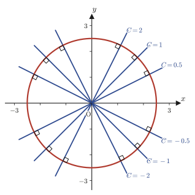
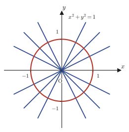
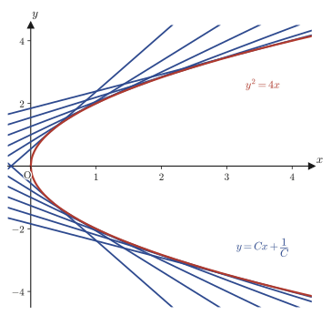
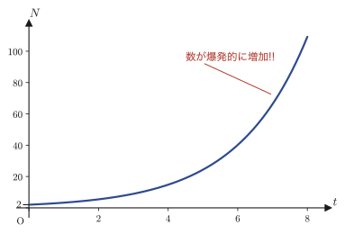
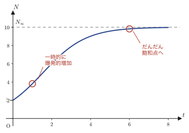

第34章完全微分方程式・積分因子と特異解
第33章では，1階微分方程式の代表的な解き方——変数分離形，同次形，1階線形微分方程式，ベルヌーイの微分方程式，リッカチの微分方程式——を身につけた．これらはどれも，方程式の「形」を見分けて，決まった置き換えや公式を当てはめる解法だった．しかし，世の中の1階微分方程式のすべてがこれらの型にきれいに収まるわけではない．本章では，まったく別の発想から1階微分方程式に切り込む．手がかりは，第6章で学んだ全微分（total differential）である．
2変数関数 $f(x,y)$ の全微分は $\dd f = f_x\,\dd x+f_y\,\dd y$ と書けた．そこで，$P(x,y)\,\dd x+Q(x,y)\,\dd y=0$ という形の微分方程式が与えられたとき，「$P=f_x$，$Q=f_y$ となるような $f(x,y)$ が実は存在していて，この方程式はただ単に $\dd f(x,y)=0$ と書き直しただけなのではないか」と疑ってみる．もしそうならば，方程式の解は $f(x,y)=C$（定数）というだけの簡単な式になる——微分方程式を解くという作業が，$f$ を見つけるだけの作業に化けるのである．このような方程式を完全微分方程式（exact differential equation）とよぶ．ただし，$P,Q$ が任意に与えられたとき，そのような都合のよい $f$ がいつも存在するとは限らない．そこで，(1) いつ存在するかを見分ける判定条件，(2) 存在しないときに，方程式の両辺に何かを掛けて無理やり存在させる積分因子（integrating factor）という技法，を順に学ぶ．
後半では，$y=xy'+f(y')$（クレローの微分方程式）や $y=xf(y')+g(y')$（ラグランジュの微分方程式）という，$y'$ について解けていない特殊な形の方程式を扱う．ここでは，ふつうの意味での「一般解」（積分定数 $C$ を含む解の集合）のほかに，特異解（singular solution）という，一般解のどの $C$ を選んでも表せない例外的な解が現れる．これは幾何学的には，一般解が表す直線群に接する包絡線（envelope）である．最後に，微生物や結晶核の個数の増え方を表すロジスティック方程式を扱い，指数関数的な「爆発的増加」が，環境や材料の限界によってどうS字型の曲線に修正されるのかを見る．
- 直交曲線群：ある曲線族に直交する曲線族を，微分方程式の言葉で求める方法（円の方程式を微分方程式から導く例）
- 完全微分方程式の定義 $P\,\dd x+Q\,\dd y=\dd f=0$ と，その判定条件 $P_y=Q_x$（シュワルツの定理が根拠）
- なぜ判定条件と解の公式 $\int_{x_0}^{x}P(x,y_0)\dd x+\int_{y_0}^{y}Q(x,y)\dd y=C$ が正しいのか，具体例を通した理解
- 積分因子 $\mu(x)$，$\mu(y)$ の求め方——$P_y\neq Q_x$ の方程式を完全微分方程式に直す技法
- クレローの微分方程式 $y=xy'+f(y')$ と，その特異解（一般解が表す直線群の包絡線）
- ラグランジュの微分方程式 $y=xf(y')+g(y')$ と，媒介変数 $p=y'$ を使って $x$ の1階線形微分方程式に帰着させる解法
- ロジスティック方程式：指数関数的増加 $\dd N/\dd t=k_0N$ から，環境収容力 $N_\infty$ を組み込んだS字曲線へ
34.1 直交曲線群 — 微分方程式の力で円の方程式を導く
まず，前章までに学んだ道具だけを使って，思いがけない事実を導いてみよう．原点を通る直線の全体を考える．傾き $C$（$C$ は定数）を持つ直線は
$$y=Cx$$という式で表される．$C$ をいろいろな値に変えれば，$y=Cx$ は原点を通るすべての直線（$y$軸自身を除く）を表す，直線の族（family）になっている．
34.1.1 直線群を微分方程式で表す
$y=Cx$ の両辺を $x$ で微分すると，$C$ は定数だから
$$y'=C$$を得る．両辺に $x$ を掛けると $xy'=Cx$ となるが，右辺の $Cx$ はもとの式よりちょうど $y$ に等しいから，
$$xy'=y\qquad\text{すなわち}\qquad y'-\frac1x y=0 \tag{34.1}\label{eq:34-lines}$$という，$C$ を含まない微分方程式が得られる．ここが肝心な点である——傾き $C$ が違う直線は無数にあるのに，そのどれもが同じ1つの微分方程式\eqref{eq:34-lines}を満たしている．逆に言えば，\eqref{eq:34-lines}の一般解（積分定数を1つ含む解の集合）は，ちょうどこの直線群 $y=Cx$ になっている．
イメージ：微分方程式は「傾きの規則」を表す
式\eqref{eq:34-lines}を $y'=y/x$（$x\neq0$）と書き直すと，これは「点 $(x,y)$ を通ってよい曲線の傾きは，そこでは必ず $y/x$ でなければならない」という規則を表していると読める．実際，$y=Cx$ 上の点 $(x,Cx)$ での傾きはたしかに $C=Cx/x=y/x$ である．一般に，微分方程式 $y'=f(x,y)$ は，平面上の各点にそこを通る曲線の傾きを指定する規則（方向場，direction field）を与えており，曲線群 $y=Cx$ はその規則にすべて従う曲線の集まりなのである．
34.1.2 直交する曲線群を作る
ここで視点を変えてみる．平面上の各点で，直線群 $y=Cx$ に直交する（垂直に交わる）方向を傾きとする曲線を集めたら，どんな図形になるだろうか．高校数学で学んだように，傾き $m$ の直線に垂直な直線の傾きは $-1/m$ である（2直線の傾きの積が $-1$ になることが直交条件だった）．したがって，直線群の傾き $y'$ の代わりに $-1/y'$ を式\eqref{eq:34-lines}に代入すれば，直交する曲線群が満たすべき微分方程式が得られるはずである．
$$\frac{1}{y'}+\frac1x y=0 \qquad\Longleftrightarrow\qquad \frac{\dd y}{\dd x}=-\frac{x}{y} \tag{34.2}\label{eq:34-orth-ode}$$（1つ目の式は\eqref{eq:34-lines}の $y'$ を $-1/y'$ に置き換えただけである．2つ目の式は，それを $1/y'=-y/x$ の形に整理し，さらに両辺の逆数をとって $y'=-x/y$ としたものである．）式\eqref{eq:34-orth-ode}は変数分離形（第33章で学んだ1階微分方程式の基本型の1つ）なので，そのまま解ける．
$$y\,\dd y=-x\,\dd x \quad\Longrightarrow\quad \int y\,\dd y=-\int x\,\dd x \quad\Longrightarrow\quad \frac12y^2=-\frac12x^2+C_1$$（左辺は $y$ だけ，右辺は $x$ だけの式にしてから，両辺をそれぞれ積分した．積分定数は右辺にまとめて $C_1$ と書く．）両辺を2倍し，$x^2$ の項を左辺に移項すると $x^2+y^2=2C_1$ となる．ここで，あらためて $2C_1$ を $C$ と書き直せば，
$$x^2+y^2=C \tag{34.3}\label{eq:34-circle}$$という円の方程式が得られる．すなわち，「原点を通る直線群 $y=Cx$」に直交する曲線群は，「原点を中心とする円 $x^2+y^2=C$」の全体だったのである．直線という素朴な図形から出発し，微分方程式を1本経由しただけで円が姿を現した——これが本節の見出しにある「微分方程式の力で円の方程式を導き出す」という意味である．

数学ノート：$C$ が負のときはどうなるか
式\eqref{eq:34-circle}の $C$ は，左辺 $x^2+y^2$ が2つの実数の2乗の和である以上，つねに $0$ 以上でなければならない．試しに $C=-1$（すなわち $2C_1=-1$）としてみると $x^2+y^2=-1$ となり，これを満たす実数の組 $(x,y)$ は存在しない．一方，$C=1$ とすれば $x^2+y^2=1$（単位円）であり，これは確かに意味を持つ図形である．

34.1.3 一般化：直交曲線群の求め方
ここまでの手順は，実は $y=Cx$ という特別な曲線族に限った話ではない．一般に，パラメータ $C$ を含む曲線の族が与えられたとき，次の手順で，それに直交する曲線族（直交曲線群，orthogonal trajectories）を求めることができる．
手順34.1 直交曲線群の求め方
(i) 曲線族の式を $x$ で微分し，得られた式ともとの式から定数 $C$ を消去して，その曲線族が満たす微分方程式 $y'=f(x,y)$ を作る．
(ii) $y'$ を $-1/y'$ に置き換えた微分方程式 $\dfrac{\dd y}{\dd x}=-\dfrac{1}{f(x,y)}$ を作る．
(iii) (ii)の微分方程式を解く．得られた解の曲線族が，もとの曲線族に直交する曲線群である．
手順(ii)がなぜ「直交」を表すのかは，34.1.2項で確認した通りである——曲線族のあるメンバーの，ある点における接線の傾きが $m$ であるとき，その点を通り，それに直交する曲線の接線の傾きは $-1/m$ でなければならない（傾きの積 $m\cdot(-1/m)=-1$ が直交条件である）．この発想は，のちに学ぶ勾配ベクトル（等高線に直交する最急上昇方向）や，電場と等電位線の関係など，物理・工学のさまざまな場面で使われる基本的な道具になる．
例題34.1 放物線群 $y=Cx^2$ に直交する曲線群
原点を通る放物線の族 $y=Cx^2$（$C$ は $0$ でない定数）に直交する曲線群を求めよ．
解答 手順34.1(i)にしたがい，まず $C$ を含まない微分方程式を作る．$y=Cx^2$ の両辺を $x$ で微分すると $y'=2Cx$ となる．もとの式から $C=y/x^2$ なので，これを代入して
$$y'=2\cdot\frac{y}{x^2}\cdot x=\frac{2y}{x}$$を得る．これが放物線群 $y=Cx^2$ の満たす微分方程式である．手順34.1(ii)にしたがい，$y'$ を $-1/y'$ に置き換えると，
$$-\frac{1}{y'}=\frac{2y}{x}\qquad\Longrightarrow\qquad \frac{\dd y}{\dd x}=-\frac{x}{2y}$$という，直交曲線群が満たすべき微分方程式が得られる．これは変数分離形なので，$2y\,\dd y=-x\,\dd x$ と変形してから両辺を積分すると，
$$y^2=-\frac{x^2}{2}+C_1\qquad\Longrightarrow\qquad x^2+2y^2=2C_1=:C'$$となる．つまり，放物線群 $y=Cx^2$ に直交する曲線群は，楕円群 $x^2+2y^2=C'$（$x$軸方向の半径が $y$軸方向の半径の $\sqrt2$ 倍の楕円）である．（sympyで検算：$x^2+2y^2=C'$ を陰関数微分すると $2x+4yy'=0$，すなわち $y'=-x/(2y)$ となり，たしかに一致する．）円のときと同じく，ここでも「放物線」という素朴な図形の直交相手として，別の2次曲線である「楕円」が現れるのは興味深い．
34.2 完全微分方程式とその判定条件
34.2.1 全微分から出発する
第6章6.3節（6.3節）で学んだように，2変数関数 $z=f(x,y)$ が全微分可能であるとき，その全微分（total differential）は
$$\dd z=f_x\,\dd x+f_y\,\dd y \tag{34.4}\label{eq:34-totaldiff}$$と書けた．ここで $f_x=\pdiff{f}{x}$，$f_y=\pdiff{f}{y}$ は，それぞれ $y$ を固定して $x$ について，$x$ を固定して $y$ について微分した偏導関数（第6章6.2節）である．この式がどこから来るのかを，$\Delta x,\Delta y$ を使った定義に戻ってもう一度確認しておこう——本章の議論の出発点になる式だからである．
$z=f(x,y)$ の，$x$ を $\Delta x$，$y$ を $\Delta y$ だけ動かしたときの変化量は，定義どおりに書けば
$$\Delta f(x,y)=\Delta z=f(x+\Delta x,\ y+\Delta y)-f(x,y)$$である．ここで，右辺に $-f(x,\ y+\Delta y)$ という項を引いてすぐにまた足す，という技巧を使う（引いて足すのだから，値はまったく変わらない——ただの恒等式である）．
$$\Delta z=f(x+\Delta x,\ y+\Delta y)-f(x,\ y+\Delta y)+f(x,\ y+\Delta y)-f(x,y)$$イメージ：引いた分だけ足す，割った分だけ掛ける
この技巧のねらいは，$x$ 方向の変化と $y$ 方向の変化を切り離すことにある．1つ目のペア $f(x+\Delta x,y+\Delta y)-f(x,y+\Delta y)$ は，$y$ の値を $y+\Delta y$ に固定したまま $x$ だけを $\Delta x$ 動かした変化量であり，2つ目のペア $f(x,y+\Delta y)-f(x,y)$ は，$x$ の値を $x$ に固定したまま $y$ だけを $\Delta y$ 動かした変化量である．こうして，斜めに動いた変化 $\Delta z$ を，「まず $y$ 方向に動き，次に $x$ 方向に動く」という2段階の動きに分解したことになる．
次に，それぞれのペアを同じ量で割ってからもう一度掛け直す（これも値を変えない恒等変形である）．
$$\Delta z=\frac{f(x+\Delta x,\ y+\Delta y)-f(x,\ y+\Delta y)}{\Delta x}\cdot \Delta x+\frac{f(x,\ y+\Delta y)-f(x,y)}{\Delta y}\cdot \Delta y$$ここまでは，どんな $\Delta x,\Delta y$ についても成り立つ恒等式である．いま両辺に $\displaystyle\lim_{\substack{\Delta x\to 0\\ \Delta y \to 0}}$ を付けてみる．右辺の2つの分数は，$\Delta x\to0$，$\Delta y\to0$ のとき，それぞれ偏微分係数の定義そのものに近づく——1つ目の分数は $y$ の値を $y+\Delta y$ に保ったまま $x$ について微分する形をしているので $\Delta x\to0$ で $f_x(x,\ y+\Delta y)$ に近づき，$f_x$ が連続な関数であれば，続けて $\Delta y\to0$ とすることで $f_x(x,\ y+\Delta y)\to f_x(x,y)$ となる．2つ目の分数は $\Delta y\to0$ でそのまま $f_y(x,y)$ に近づく．一方，$\Delta x,\Delta y$ 自身は文字通り $0$ に近づいていく．
注意：この議論は「速い略式」であることを意識しよう
上の議論は，$\Delta x\to0$ と $\Delta y\to0$ をこの順序でとる（先に $x$，あとから $y$）という素朴な進め方であり，$(\Delta x,\Delta y)\to(0,0)$ を同時に，あらゆる近づき方について考える本当の2変数の極限（第6章定義6.3の全微分可能性）とは，論理的には別物である．$f_x,f_y$ が連続である（$f$ が $C^1$ 級である）という仮定のもとでは，どちらの議論でも同じ結論——式\eqref{eq:34-totaldiff}——にたどり着くことが知られているので，ここでは結果を急いで受け入れてよい．しかし，この先で「なぜ $\Delta x$ が $\dd x$ になり，しかも $0$ になってしまうのか」という言い回しに出会ったら，それは「$\Delta x,\Delta y\to0$ の極限をとった後に残る，1次の項の係数どうしを比べている」という意味であり，$\Delta x,\Delta y$ という数それ自体は，極限としてはたしかに $0$ に近づいている，ということを思い出してほしい．
この極限を取った結果，$\Delta x,\Delta y$ という「有限の増分」を表す記号を，極限の後に残る「無限小の増分」を表す記号 $\dd x,\dd y$ に書き換える——これが微分方程式で $\dd x,\dd y$ という記号を使う理由である．
$$\therefore\ \frac{\partial f(x,y)}{\partial x}\cdot \dd x + \frac{\partial f(x,y)}{\partial y}\cdot \dd y = \dd f(x,y) = 0$$ここで，$f_x=P(x,y)$，$f_y=Q(x,y)$ とおくと，
$$P(x,y)\,\dd x+Q(x,y)\,\dd y=\dd f(x,y)=0 \tag{34.5}\label{eq:34-exact-form}$$という形の微分方程式が得られる．
定義34.1 完全微分方程式
$P(x,y)\,\dd x+Q(x,y)\,\dd y=0$ の形の微分方程式で，ある2変数関数 $f(x,y)$ が存在して $P=f_x$，$Q=f_y$ となる（つまり式\eqref{eq:34-exact-form}のように，全微分 $\dd f=0$ と書き直せる）とき，これを完全微分方程式（exact differential equation）という．
完全微分方程式（式\eqref{eq:34-exact-form}）の解——すなわち $f(x,y)=C$ を満たす $f$ の具体形——は，次の式で与えられる（なぜこの形になるのかは34.3節で確かめる）．
$$\int_{x_0}^{x} P(x,y)\,\dd x + \int_{y_0}^{y} Q(x_0,y)\,\dd y = C\qquad\text{又は}\qquad\int_{x_0}^{x} P(x,y_0)\,\dd x + \int_{y_0}^{y} Q(x,y)\,\dd y = C \tag{34.6}\label{eq:34-exact-sol}$$（$x_0,y_0$ は積分の下端として自分で選んでよい定数であり，ふつうは計算が簡単になるように $x_0=y_0=0$ ととる．）
なぜ？：$\int P\,\dd x+\int Q\,\dd y=C$ ではいけないのか
式\eqref{eq:34-exact-sol}を初めて見ると，「$P$ を $x$ で，$Q$ を $y$ で不定積分して足すだけ」の $\displaystyle\int P(x,y)\,\dd x+\int Q(x,y)\,\dd y=C$ の方が自然に見えるかもしれない．しかし，$P,Q$ は $x,y$ の両方の関数なので，$\int P\,\dd x$ を計算するときに $y$ をどんな値に固定して積分するかによって結果が変わってしまい，このままでは答えが定まらない．この問題をどう解決するのかは，34.3節で具体例を使って確かめる．
34.2.2 判定条件 $P_y=Q_x$
完全微分方程式 $P(x,y)\,\dd x+Q(x,y)\,\dd y=\dd f(x,y)=0$ の $P$ を $y$ で，$Q$ を $x$ で偏微分すると，それぞれ
$$P_y=(f_x)_y=f_{xy},\qquad Q_x=(f_y)_x=f_{yx}$$となる．ここで，第6章定理6.1のシュワルツの定理（$f_{xy},f_{yx}$ がともに連続ならば $f_{xy}=f_{yx}$，すなわち偏微分の順序を交換してよい）を思い出そう．$f_{xy}=f_{yx}$ なのだから，
$$\therefore\ P_y=Q_x \tag{34.7}\label{eq:34-exactcond}$$定理34.1 完全微分方程式の判定条件
$P(x,y)\,\dd x+Q(x,y)\,\dd y=0$ が完全微分方程式である（すなわち $P=f_x$，$Q=f_y$ となる $f$ が存在する）ならば，$P,Q$ が$C^1$ 級（$1$階の偏導関数 $P_x,P_y,Q_x,Q_y$ がすべて存在して連続であること）である限り，
$$P_y=Q_x$$が成り立つ．
なぜ？：$P_y=Q_x$ は何を保証しているのか
この完全微分方程式がふつうの積分だけで解を求められるということは，直感的には「$P\,(=f_x)$ の $y$ 方向への変化率」と「$Q\,(=f_y)$ の $x$ 方向への変化率」が，同じ量（どちらも $f_{xy}=f_{yx}$）を表していなければならない，ということである．逆に言えば，もし $P_y\neq Q_x$ であれば，そのような $f$ は存在しえない——ただし，方程式の両辺に何かを掛けることで，強引に $P_y=Q_x$ を成り立たせる手段が残されている．これが34.4節で学ぶ積分因子である．
例題34.2 完全微分方程式の判定と求解
微分方程式 $(2xy+3)\,\dd x+(x^2-1)\,\dd y=0$ が完全微分方程式であることを確かめ，一般解を求めよ．
解答 $P(x,y)=2xy+3$，$Q(x,y)=x^2-1$ とおく．
$$P_y=\pdiff{}{y}(2xy+3)=2x,\qquad Q_x=\pdiff{}{x}(x^2-1)=2x$$より $P_y=Q_x=2x$ が成り立つので，定理34.1（の逆——34.3節で正当化する）により，この方程式は完全微分方程式である．式\eqref{eq:34-exact-sol}の第1式に $x_0=y_0=0$ を代入して解を計算する．まず，$Q(x_0,y)=Q(0,y)=0^2-1=-1$（$y$ を含まない定数になる）ことに注意すると，
$$\int_0^x P(x,y)\,\dd x+\int_0^y Q(x_0,y)\,\dd y=\int_0^x(2xy+3)\,\dd x+\int_0^y(-1)\,\dd y$$（第1項は $y$ を止めたまま $x$ で積分し，上端は変数の $x$ である．第2項は，$Q$ の中の $x$ をあらかじめ下端 $x_0=0$ に固定してから，$y$ について積分する——だからこそ被積分関数はもう $y$ を含まない定数 $-1$ になっている．）それぞれの項を計算すると，
$$\int_0^x(2xy+3)\,\dd x=\Big[x^2y+3x\Big]_0^x=x^2y+3x,\qquad \int_0^y(-1)\,\dd y=\Big[-y\Big]_0^y=-y$$この2つを足すと，交差項 $x^2y$ は第1項にしか現れないので二重に数えられることなく，そのまま
$$f(x,y)=x^2y+3x-y=C$$が得られる（$f_x=2xy+3=P$，$f_y=x^2-1=Q$ となることが直接確認でき，sympyでも検算済み）．こうして，式\eqref{eq:34-exact-sol}に $x_0,y_0$ を代入するだけで，一度の計算で正しい一般解にたどり着けることがわかる．
34.3 なぜ判定条件と解の公式が成り立つのか
34.3.1 なぜ $P_y=Q_x$ で十分なのか
定理34.1で確かめたのは，「完全微分方程式ならば $P_y=Q_x$」という必要条件の向きだけである．実際に方程式を解くときにありがたいのは，逆向き——「$P_y=Q_x$ さえ成り立てば，$P\,\dd x+Q\,\dd y=0$ は完全微分方程式である（つまり，適当な $f$ が存在する）」という十分条件の向きの方である．ノートは，この逆向きが成り立つ理由を，次のように考察している．
考察：$P_y=Q_x$ は何を保証しているのか（34.2節のつづき）
完全微分方程式が，特別な技巧なしに，ふつうの積分だけで解けるとしよう．そのとき，$P\,(=f_x)$ の $y$ 方向への変化のようす（$P_y$）と，$Q\,(=f_y)$ の $x$ 方向への変化のようす（$Q_x$）は，同じ量——もとの関数 $f$ を $x,y$ の両方向に1回ずつ動かしたときの変化率——を表しているはずである．つまり，ここで言いたいのは，$P_y\neq Q_x$ の方程式であっても，何らかの手段を使えば完全微分方程式に持ち込める，ということである（この手段こそ，34.4節で学ぶ積分因子である）．
この考察は直感としては正しいが，「$f$ が本当に存在する理由」そのものはまだ述べていない．そこで，高校生にも追える形で，$P_y=Q_x$ から実際に $f$ を作ってみせる——つまり構成的に存在を証明する——ことにしよう．
定理34.2 完全微分方程式の判定条件（十分性）
平面のある長方形の領域で $P(x,y),Q(x,y)$ が $C^1$ 級（偏導関数 $P_x,P_y,Q_x,Q_y$ がすべて連続）であり，かつ
$$P_y=Q_x$$が成り立つならば，$(x_0,y_0)$ をその領域内の1点として，
$$f(x,y):=\int_{x_0}^{x}P(t,y_0)\,\dd t+\int_{y_0}^{y}Q(x,s)\,\dd s \tag{34.8}\label{eq:34-fconstruct}$$とおくと，$f_x=P$，$f_y=Q$ となる．すなわち，$P\,\dd x+Q\,\dd y=0$ は完全微分方程式であり，その解は $f(x,y)=C$ である．
証明
式\eqref{eq:34-fconstruct}の第2項 $\displaystyle\int_{y_0}^{y}Q(x,s)\,\dd s$ を $y$ で微分するのは，微積分の基本定理（第5章）そのものである——積分区間の上端に使われている文字で微分すれば，被積分関数にその文字を代入した値が出てくる．第1項 $\displaystyle\int_{x_0}^{x}P(t,y_0)\,\dd t$ には $y$ が（積分変数としても中身としても）入っていない（積分変数は $t$，$P$ の中身は $y_0$ に固定されている）ので，$y$ で微分すると $0$ になる．よって，
$$f_y=\pdiff{}{y}\int_{x_0}^{x}P(t,y_0)\,\dd t+\pdiff{}{y}\int_{y_0}^{y}Q(x,s)\,\dd s=0+Q(x,y)=Q(x,y)$$となり，$f_y=Q$ が示された（ここまでは，仮定 $P_y=Q_x$ をまったく使っていないことに注意しよう）．
次に $f_x$ を計算する．第1項を $x$ で微分するのも，やはり微積分の基本定理である．
$$\pdiff{}{x}\int_{x_0}^{x}P(t,y_0)\,\dd t=P(x,y_0)$$第2項 $\displaystyle\int_{y_0}^{y}Q(x,s)\,\dd s$ は，積分区間 $[y_0,y]$ が $x$ に依存していないので，$x$ による微分と，$s$ についての積分の順序を交換してよい（積分記号下の微分，differentiation under the integral sign とよばれる技法——パラメータ $x$ についての微分と，別の変数 $s$ についての積分の順序を交換する——であり，第30章演習30.2でも同じ技法を使う）．
$$\pdiff{}{x}\int_{y_0}^{y}Q(x,s)\,\dd s=\int_{y_0}^{y}\pdiff{Q}{x}(x,s)\,\dd s=\int_{y_0}^{y}Q_x(x,s)\,\dd s$$ここで，仮定 $P_y=Q_x$ を使う．$Q_x(x,s)$ を $P_y(x,s)$ に置き換えると，右辺はふたたび微積分の基本定理（原始関数の差の形）によって計算できる．
$$\int_{y_0}^{y}Q_x(x,s)\,\dd s=\int_{y_0}^{y}P_y(x,s)\,\dd s=\Big[P(x,s)\Big]_{y_0}^{y}=P(x,y)-P(x,y_0)$$（2番目の等号は，「$s$ について $P(x,s)$ を微分すると $P_y(x,s)$ になる」ことの逆向きの利用——微積分の基本定理——である．）したがって，
$$f_x=P(x,y_0)+\big\{P(x,y)-P(x,y_0)\big\}=P(x,y)$$となり，$f_x=P$ も示された．以上より，$f_x=P$，$f_y=Q$ がともに成り立つので，この $f$ が求める関数であり，$P\,\dd x+Q\,\dd y=\dd f=0$ が成り立つ．（証明終わり）
イメージ：微積分の基本定理を2回使っただけ
この証明でしていることは，実はとても素朴である．「$y$ を $y_0$ に固定した1変数関数 $P(x,y_0)$」を積分して，まず $x$ 方向の変化をすべて回収する．次に，「$x$ を（今度は動かす）変数のままにした $Q(x,y)$」を積分して，$y$ 方向の変化を回収する．仮定 $P_y=Q_x$ は，2段階目の積分で「本当は $Q$ を積分するべきところを，代わりに $P$ の $y$ 方向の変化率を積分することで同じ答えが出る」ことを保証するためだけに使われている．この仮定がなければ，2段階目の積分は $f_x$ の中に $Q_x-P_y$ という余計な「食い違い」を残してしまい，$f_x=P$ にならない．
34.3.2 なぜ解の公式はこの形なのか——積分路で理解する
式\eqref{eq:34-fconstruct}の作り方をもう一度よく見ると，これは「まず $y=y_0$ に固定したまま $x_0$ から $x$ まで動き（この間 $P$ だけを積分する），次に $x$ を固定したまま $y_0$ から $y$ まで動く（この間 $Q$ だけを積分する）」という，$(x_0,y_0)$ から $(x,y)$ へ至るL字形の積分路（path of integration）に沿った積分になっている．図34.3に，この経路と，もう1つの経路（先に $y$ 方向，あとで $x$ 方向に動く経路）を示す．
経路①（先に $x$ 方向，あとで $y$ 方向）に沿って積分すると，1区間目では $y=y_0$（一定）だから $\dd y=0$ で $P$ の寄与だけが残り，2区間目では $x$（一定）だから $\dd x=0$ で $Q$ の寄与だけが残る．
$$f(x,y)-f(x_0,y_0)=\int_{x_0}^{x}P(t,y_0)\,\dd t+\int_{y_0}^{y}Q(x,s)\,\dd s$$これがまさに式\eqref{eq:34-fconstruct}であり，式\eqref{eq:34-exact-sol}の第2式（$\int_{x_0}^{x}P(x,y_0)\dd x+\int_{y_0}^{y}Q(x,y)\dd y=C$，ただし積分変数と上端の文字を同じ記号で書く記法上の都合がある）に対応する．経路②（先に $y$ 方向，あとで $x$ 方向）でも同様の計算をすると，
$$f(x,y)-f(x_0,y_0)=\int_{y_0}^{y}Q(x_0,s)\,\dd s+\int_{x_0}^{x}P(t,y)\,\dd t$$となり，これが式\eqref{eq:34-exact-sol}の第1式に対応する．定理34.2の証明で確かめたように，$P_y=Q_x$ が成り立てば，どちらの経路を通っても同じ答え——$f(x,y)-f(x_0,y_0)$——が得られる．これが，式\eqref{eq:34-exact-sol}の2つの式のどちらを使ってもよい理由である．
注意：ふつうの「$\int P\,\dd x+\int Q\,\dd y$」との違い
34.2.1項の「なぜ？」ボックスで見たとおり，$\displaystyle\int P(x,y)\,\dd x+\int Q(x,y)\,\dd y$ を素朴に計算すると答えが合わないことがある．その原因が，ここではっきりする．この素朴な式は，$P$ を積分するときも $Q$ を積分するときも，もう一方の変数を「今の値のまま」動かさずに積分する，という意味に読める．しかし，それはL字形の経路①・経路②のどちらとも異なり，$x$ 方向の動きと $y$ 方向の動きを（一方を固定せずに）両方とも「現在の $(x,y)$」で行っているような，つじつまの合わない積分になってしまう．正しくは，式\eqref{eq:34-exact-sol}のように，一方の積分では相手の変数を積分の下端 $x_0$ または $y_0$ にいったん固定しなければならない．
例題34.3 ノートの例：なぜ素朴な足し算が破綻するのか
$f(x,y)=x^2+5xy+y^2$ とする．全微分 $\dd f=P\,\dd x+Q\,\dd y$ の $P,Q$ を求め，$P_y=Q_x$ を確かめよ．そのうえで，(i) 素朴な和 $\displaystyle\int P\,\dd x+\int Q\,\dd y$ を計算し，もとの $f$ と一致しないことを確かめ，(ii) 式\eqref{eq:34-exact-sol}の経路公式で計算すると正しく $f$ に戻ることを確かめよ．
解答 $f_x=2x+5y$，$f_y=5x+2y$ なので，$P=2x+5y$，$Q=5x+2y$ である．$P_y=5$，$Q_x=5$ で $P_y=Q_x$ が成り立つ．
(i) $P,Q$ をそれぞれ不定積分すると，
$$\int P\,\dd x=x^2+5xy,\qquad\int Q\,\dd y=5xy+y^2$$（$P$ の不定積分では $y$ を定数とみなし，$Q$ の不定積分では $x$ を定数とみなした．）これらを単純に足すと，
$$x^2+5xy+5xy+y^2=x^2+10xy+y^2$$となり，もとの $f=x^2+5xy+y^2$ と一致しない——交差項 $5xy$ が，$P$ の積分からも $Q$ の積分からも1つずつ，合計2回数えられてしまっている（sympyで確認済み：naive sum $=x^2+10xy+y^2$．これはまさに34.2.1項の「なぜ？」ボックスで指摘した問題そのものである）．
(ii) 式\eqref{eq:34-exact-sol}の第2式に $x_0=y_0=0$ を代入する．
$$\int_{0}^{x}P(x,0)\,\dd x+\int_{0}^{y}Q(x,y)\,\dd y=\int_0^x(2x+5\cdot0)\,\dd x+\int_0^y(5x+2y)\,\dd y$$ $$=\Big[x^2\Big]_0^x+\Big[5xy+y^2\Big]_0^y=x^2+5xy+y^2$$今度はもとの $f$ に正しく一致する（sympyで確認済み）．違いは，1つ目の積分では $P$ の中の $y$ をあらかじめ下端 $y_0=0$ に固定してから積分している点である——こうすることで，交差項 $5xy$ は2つ目の積分だけから，ちょうど1回だけ現れるようになり，二重に数えられない．
34.3.3 もう1つの実践的な方法：未知関数法
式\eqref{eq:34-exact-sol}の経路公式は，「なぜその公式で正しい答えが出るのか」を説明するには最適だが，実際に手を動かして計算するときは，次の未知関数法（method of undetermined function）と呼ばれる手順の方が見通しがよいことが多い．34.4節の積分因子の計算でも，この方法を使う．
手順34.2 完全微分方程式の解き方（未知関数法）
$P\,\dd x+Q\,\dd y=0$（$P_y=Q_x$）を解くには：
(i) $f_x=P$ となるように，$P$ を $x$ について（$y$ を定数とみなして）不定積分する．積分定数の代わりに，$y$ だけの未知関数 $g(y)$ を添えておく：$f(x,y)=\displaystyle\int P\,\dd x+g(y)$．
(ii) これを $y$ で偏微分し，$f_y=Q$ となるべきことを使って $g'(y)$ を求める．
(iii) $g'(y)$ を $y$ について積分して $g(y)$ を求め，(i)に代入すれば，$f(x,y)=C$ が一般解である．
この手順を，例題34.2の $(2xy+3)\,\dd x+(x^2-1)\,\dd y=0$ に使って，34.2節で持ち越しにした計算を仕上げよう．手順34.2(i)により，$P=2xy+3$ を $x$ について積分すると，
$$f(x,y)=\int(2xy+3)\,\dd x+g(y)=x^2y+3x+g(y)$$（$y$ を定数とみなして積分するので，$2xy$ の積分は $x^2y$，定数項 $3$ の積分は $3x$ である．）手順34.2(ii)により，これを $y$ で偏微分すると $f_y=x^2+g'(y)$ となるが，これは $Q=x^2-1$ に等しくなければならないので，$g'(y)=-1$ である．手順34.2(iii)により，$g(y)=-y$（積分定数は最終的な $C$ にまとめるのでここでは省く）．よって，
$$f(x,y)=x^2y+3x-y$$となり，これは34.2節で経路公式から得た答えと完全に一致する（sympyで確認済み）．こうして，例題34.2で持ち越しにした「正しい手順」が確立した．
34.4 積分因子
34.4.1 積分因子の考え方
注意：形が似ていても $P_y\neq Q_x$ なら完全微分方程式ではない
$P\,\dd x+Q\,\dd y=0$ という「形」をしているからといって，完全微分方程式であるとは限らない．定理34.1・定理34.2により，完全微分方程式であるための必要十分条件は $P_y=Q_x$ である．$P_y\neq Q_x$ の方程式は，このままでは34.2節・34.3節の方法で解くことができない．
完全微分方程式は $P_y=Q_x$ を満たす方程式であり，そうであってこそ34.3節の方法でふつうの積分だけで解ける．では，$P_y\neq Q_x$ の方程式，すなわち一見完全微分方程式でない方程式は，もう手も足も出ないのだろうか．そんなことはない．方程式の両辺に，うまく選んだ関数 $\mu(x,y)$ を掛けてやれば，$P_y=Q_x$ を無理やり成り立たせることができる場合がある．この $\mu(x,y)$ を積分因子（integrating factor）という．
$$P(x,y)\,\dd x+Q(x,y)\,\dd y=0 \tag{34.9}\label{eq:34-notexact}$$（$P_y\neq Q_x$ とする．）この両辺に $\mu(x,y)$ を掛ける．
$$\mu(x,y)P(x,y)\,\dd x+\mu(x,y)Q(x,y)\,\dd y=0$$これが完全微分方程式になるための条件は，$\mu P$ を $y$ で，$\mu Q$ を $x$ で偏微分した結果が等しいこと，すなわち積の微分法則（第3章）を使うと，
$$(\mu P)_y=(\mu Q)_x\qquad\text{すなわち}\qquad \mu_yP+\mu P_y=\mu_xQ+\mu Q_x \tag{34.10}\label{eq:34-ifcond}$$である．式\eqref{eq:34-ifcond}が成り立つように $\mu$ を選ぶことができれば，式\eqref{eq:34-notexact}は完全微分方程式になり，34.3節の方法で解くことができる．ただし，$\mu(x,y)$ が本当に $x,y$ の両方の変数を持つ一般の関数だとすると，式\eqref{eq:34-ifcond}は $\mu$ についての偏微分方程式であり，もとの方程式よりもさらに解くのが難しくなってしまう．そこで，$\mu$ が $x$ だけの関数，または $y$ だけの関数であるという特別な場合に限って，$\mu$ を求める方法を考える．
34.4.2 $\mu$ が $x$ だけの関数のとき
$\mu=\mu(x)$（$y$ を含まない）と仮定すると，$\mu_y=0$ である．これを式\eqref{eq:34-ifcond}に代入すると，
$$\mu P_y=\mu_xQ+\mu Q_x\qquad\Longrightarrow\qquad \mu(P_y-Q_x)=\diff{}{x}(\mu)\cdot Q$$（右辺は，$\mu$ が $x$ だけの関数だから，偏微分 $\mu_x$ が常微分 $\dd\mu/\dd x$ と同じものになることを使った．）両辺を $\mu Q$ で割って $\dd x$ を掛けると，
$$\frac{P_y-Q_x}{Q}\,\dd x=\frac{1}{\mu}\,\dd\mu$$という，右辺が $\mu$ だけ，左辺が（うまくいけば）$x$ だけの式が得られる．左辺の $\dfrac{P_y-Q_x}{Q}$ が実際に $x$ だけの関数になっている（$y$ が消えてくれる）ことが，$\mu=\mu(x)$ という仮定が成り立つための条件である．そこで，これを $g(x)$ とおく．
$$g(x):=\frac{P_y-Q_x}{Q}$$注意：この式が $x$ だけの関数になるかどうかを最初に確認する
$\dfrac{P_y-Q_x}{Q}$ を計算してみて，$y$ がすべて消えて $x$ だけの式になっていれば，$\mu(x)$ の形の積分因子が存在する．$y$ が消えずに残ってしまったら，$\mu(x)$ だけでは無理なので，次に34.4.3項の $\mu(y)$ の場合を試す．
両辺に $\displaystyle\int$ をつけて積分すると，
$$\int g(x)\,\dd x=\ln|\mu|$$（左辺は $x$ だけの積分，右辺は $\dfrac{1}{\mu}\dd\mu$ を $\mu$ について積分した結果——$\ln|\mu|$ の微分が $1/\mu$ になることを使っている．）両辺の指数をとると，
$$\mu=e^{\int g(x)\,\dd x} \tag{34.11}\label{eq:34-mux}$$という，$\mu(x)$ の公式が得られる．
注意：積分因子には積分定数 $C$ をつけてはならない
式\eqref{eq:34-mux}の指数の中の $\int g(x)\,\dd x$ に，好きな積分定数を足してよいように見えるかもしれないが，それはしてはいけない．積分因子 $\mu$ は，方程式の両辺——つまり $P$ と $Q$ の両方——に同じものを掛けて，$P_y=Q_x$ を成り立たせるための道具である．もし $\mu$ に積分定数の分だけ自由度を残すと，$\mu=e^{\int g\,\dd x+K}=e^{K}\cdot e^{\int g\,\dd x}$ となる．これは，掛け算の定数倍 $e^K$ を除けば同じ $\mu$ であり，$\mu$ を定数倍しても $P_y=Q_x$ の成否そのものは変わらないので実害はないのだが，慣習として積分因子はもっとも簡単な形——ちょうど式\eqref{eq:34-mux}の形，つまり積分定数を $0$ とした形——を採用する．
例題34.4 $\mu(x)$ による求解
微分方程式 $(x^2+y^2+x)\,\dd x+xy\,\dd y=0$ を，積分因子を使って解け．
解答 $P=x^2+y^2+x$，$Q=xy$ とおくと，$P_y=2y$，$Q_x=y$ であり，$P_y\neq Q_x$ なので，このままでは完全微分方程式ではない．そこで，
$$g(x)=\frac{P_y-Q_x}{Q}=\frac{2y-y}{xy}=\frac{y}{xy}=\frac1x$$を計算すると，$y$ がきれいに消えて $x$ だけの関数になった．よって $\mu(x)$ の形の積分因子が存在し，式\eqref{eq:34-mux}より，
$$\mu=e^{\int \frac1x\,\dd x}=e^{\ln|x|}=|x|$$（$x\gt0$ の範囲で考えることにすれば $\mu=x$ である．）両辺に $\mu=x$ を掛けると，
$$(x^3+xy^2+x^2)\,\dd x+x^2y\,\dd y=0$$確かに，$\pdiff{}{y}(x^3+xy^2+x^2)=2xy$，$\pdiff{}{x}(x^2y)=2xy$ となり，$P_y=Q_x$ が回復している（sympyで確認済み）．手順34.2（未知関数法）で解くと，$\mu P=x^3+xy^2+x^2$ を $x$ について積分して，
$$f(x,y)=\frac{x^4}{4}+\frac{x^2y^2}{2}+\frac{x^3}{3}+g(y)$$これを $y$ で偏微分すると $f_y=x^2y+g'(y)$ となり，これは $\mu Q=x^2y$ に等しいはずだから，$g'(y)=0$，すなわち $g(y)$ は定数（$0$ としてよい）である．よって，一般解は
$$\frac{x^4}{4}+\frac{x^3}{3}+\frac{x^2y^2}{2}=C$$である（sympyで $f_x=\mu P$，$f_y=\mu Q$ を確認済み）．
34.4.3 $\mu$ が $y$ だけの関数のとき
同様に，$\mu=\mu(y)$（$x$ を含まない）と仮定すると，$\mu_x=0$ である．式\eqref{eq:34-ifcond}に代入すると，
$$\mu_yP+\mu P_y=\mu Q_x\qquad\Longrightarrow\qquad \diff{}{y}(\mu)\cdot P=\mu(Q_x-P_y)$$両辺を $\mu P$ で割って $\dd y$ を掛けると，
$$\frac{Q_x-P_y}{P}\,\dd y=\frac{1}{\mu}\,\dd\mu$$左辺の $\dfrac{Q_x-P_y}{P}$ が $y$ だけの関数になっていることを確認し，これを $h(y)$ とおく．ただし，$\mu(x)$ の場合の $g(x)$ と符号の並びをそろえるため，ここでは
$$h(y):=\frac{P_y-Q_x}{P}$$と定義する．
符号に注意
$h(y)=\dfrac{P_y-Q_x}{P}$ と定義すると，先ほどの式の左辺 $\dfrac{Q_x-P_y}{P}$ は $-h(y)$ に等しい．したがって，両辺に $\displaystyle\int$ をつけると
$$-\int h(y)\,\dd y=\ln|\mu|$$となる点に注意しよう（$g(x)$ のときのように，$+\displaystyle\int g\,\dd x=\ln|\mu|$ ではない）．
例題34.5 $\mu(y)$ による求解
微分方程式 $xy\,\dd x+(x^2+y^2+y)\,\dd y=0$ を，積分因子を使って解け．
解答 $P=xy$，$Q=x^2+y^2+y$ とおくと，$P_y=x$，$Q_x=2x$ であり，$P_y\neq Q_x$ である．そこで，
$$h(y)=\frac{P_y-Q_x}{P}=\frac{x-2x}{xy}=\frac{-x}{xy}=-\frac1y$$を計算すると，$x$ が消えて $y$ だけの関数になった．よって $\mu(y)$ の形の積分因子が存在し，式\eqref{eq:34-muy}より，
$$\mu=e^{-\int\left(-\frac1y\right)\dd y}=e^{\int\frac1y\,\dd y}=e^{\ln|y|}=|y|$$（$y\gt0$ の範囲で考えることにすれば $\mu=y$ である．）両辺に $\mu=y$ を掛けると，
$$xy^2\,\dd x+(x^2y+y^3+y^2)\,\dd y=0$$確かに，$\pdiff{}{y}(xy^2)=2xy$，$\pdiff{}{x}(x^2y+y^3+y^2)=2xy$ となり，$P_y=Q_x$ が回復している（sympyで確認済み）．手順34.2で解くと，$\mu P=xy^2$ を $x$ について積分して，
$$f(x,y)=\frac{x^2y^2}{2}+g(y)$$$y$ で偏微分すると $f_y=x^2y+g'(y)$ となり，これは $\mu Q=x^2y+y^3+y^2$ に等しいはずだから，$g'(y)=y^3+y^2$，よって $g(y)=\dfrac{y^4}{4}+\dfrac{y^3}{3}$ である．したがって，一般解は
$$\frac{x^2y^2}{2}+\frac{y^4}{4}+\frac{y^3}{3}=C$$である（sympyで $f_x=\mu P$，$f_y=\mu Q$ を確認済み）．
34.5 クレローの微分方程式と特異解
ここからは，これまでとはやや毛色の違う微分方程式を扱う．$y'$（以下 $p$ と書く）について，方程式が
$$y=xy'+f(y') \tag{34.13}\label{eq:34-clairaut}$$という形——右辺が，$x$ と $y'$ の1次式に，$y'$ だけの関数 $f(y')$ を足した形——をしているとき，これをクレローの微分方程式（Clairaut's equation；クレロー，Clairaut は18世紀フランスの数学者）という．
34.5.1 一般解と特異解の導出
式\eqref{eq:34-clairaut}の両辺を $x$ で微分する．右辺の $f(y')$ は，$y'$ を経由した $x$ の合成関数なので，連鎖律（第3章）を使う．
$$\diff yx=(x)'\cdot y'+x\cdot(y')'+\frac{\dd f}{\dd y'}\cdot\diff{y'}{x}$$（右辺第1項・第2項は積の微分法則を $xy'$ に使ったもの，第3項は $f(y')$ を連鎖律で微分したものである．）左辺の $\dd y/\dd x$ はもとの $y'$ そのものであり，$(x)'=1$，$(y')'=\dd y'/\dd x$（$y'$ をもう一度 $x$ で微分したもの，すなわち $\dd^2y/\dd x^2$）だから，
$$y'=y'+x\cdot\frac{\dd^2y}{\dd x^2}+f'(y')\cdot\frac{\dd^2y}{\dd x^2}$$両辺から $y'$ を消去すると，
$$0=x\frac{\dd^2y}{\dd x^2}+f'(y')\frac{\dd^2y}{\dd x^2}=\frac{\dd^2y}{\dd x^2}\big\{x+f'(y')\big\} \tag{34.14}\label{eq:34-clairautstep}$$右辺が $0$ になるのは，$\dd^2y/\dd x^2=0$ であるか，または $x+f'(y')=0$ であるか，そのどちらか（または両方）のときである．
$$\therefore\ \frac{\dd^2y}{\dd x^2}=0\qquad\text{または}\qquad x+f'(y')=0$$34.5.2 一般解——$\dd^2y/\dd x^2=0$ の場合
$\dfrac{\dd^2y}{\dd x^2}=0$（第35章で学ぶ，2階微分方程式のもっとも単純な場合）を積分すると，$\dfrac{\dd y}{\dd x}=C$（$C$ は積分定数）である．これを式\eqref{eq:34-clairaut}にそのまま代入すると，
$$y=Cx+f(C) \tag{34.15}\label{eq:34-clairautgen}$$という一般解が求まる．これは，傾き $C$，$y$切片 $f(C)$ の直線を，$C$ を動かして集めた直線群である．
34.5.3 特異解——$x+f'(y')=0$ の場合
特異解とは？
特異解（singular solution）は，一般解\eqref{eq:34-clairautgen}のどの $C$ を選んでも表すことができない，例外的な解である．そして，特異解が表す曲線は，一般解が表す直線群\eqref{eq:34-clairautgen}のすべてに接する包絡線（envelope）になっている．
特異解を求めるには，$x+f'(y')=0$ をまず $y'$ について解いて $y'=g(x)$（$g$ は $f'$ の逆関数にあたるもの）の形にし，これを式\eqref{eq:34-clairaut}に代入して $x$ だけの式にする．
手順34.3 クレローの微分方程式の解き方
$y=xy'+f(y')$ の一般解と特異解は，次の手順で求める．
(i) 一般解：$y=Cx+f(C)$（$C$ は任意定数）．
(ii) 特異解：$x+f'(y')=0$ を $y'$ について解き，$y=xy'+f(y')$ に代入して $y'$ を消去する．得られた $x,y$ の関係式が特異解であり，一般解の直線群の包絡線を表す．
例題34.6 $y=xy'+\dfrac{1}{y'}$ の一般解と特異解
クレローの微分方程式 $y=xp+\dfrac1p$（$p=y'$，$f(p)=1/p$）の一般解と特異解を求めよ．
解答 手順34.3(i)より，一般解は，$f(C)=1/C$ を代入して，
$$y=Cx+\frac1C\qquad(C\neq0)$$である．手順34.3(ii)より，特異解を求める．$f'(p)=-\dfrac{1}{p^2}$ なので，$x+f'(p)=0$ は，
$$x-\frac{1}{p^2}=0\qquad\Longrightarrow\qquad p^2=\frac1x\qquad\Longrightarrow\qquad p=\frac{1}{\sqrt x}\quad(x\gt0,\ p\gt0\ \text{の枝を取る})$$これを $y=xp+1/p$ に代入すると，
$$y=x\cdot\frac{1}{\sqrt x}+\sqrt x=\sqrt x+\sqrt x=2\sqrt x$$両辺を2乗すると，特異解は
$$y^2=4x \tag{34.16}\label{eq:34-clairautsing}$$という放物線である（sympyで確認済み：$p=1/\sqrt x$ を $x-1/p^2=0$ に代入すると $0$ になり，$y=xp+1/p=2\sqrt x$ から $y^2-4x=0$ が成り立つ）．
この放物線が，本当に一般解の直線群 $y=Cx+1/C$ すべてに接していることを確かめよう．直線と放物線の交点の $x$ 座標は，$y=Cx+1/C$ を $y^2=4x$ に代入して得られる
$$\left(Cx+\frac1C\right)^2=4x$$という $x$ の2次方程式の解である．整理すると $C^2x^2-2x+\dfrac{1}{C^2}=0$ となり，この2次方程式の判別式は，
$$D=(-2)^2-4\cdot C^2\cdot\frac{1}{C^2}=4-4=0$$である（sympyで確認済み）．判別式が $0$ ということは，直線と放物線がちょうど1点で重解を持つ——つまり接している——ということであり，たしかに直線群 $y=Cx+1/C$ は放物線 $y^2=4x$ に接している．図34.4に，いくつかの $C$ の値についてこの直線群と放物線を重ねて描いた．

34.6 ラグランジュの微分方程式
クレローの微分方程式\eqref{eq:34-clairaut}をもう少し一般化し，$x$ の係数も $y'$ の関数にしたものを考える．$p=y'$ とおいて，
$$y=xf(p)+g(p)\qquad(f(p)\neq p) \tag{34.17}\label{eq:34-lagrange}$$という形の微分方程式を，ラグランジュの微分方程式（Lagrange's equation；ラグランジュ，Lagrange は18–19世紀フランスの数学者）という．（$f(p)=p$ の場合は，式\eqref{eq:34-clairaut}のクレローの微分方程式そのものになってしまうので，ここでは除いておく．）
34.6.1 解法の導出
式\eqref{eq:34-lagrange}の両辺を $x$ で微分する．クレローのときと同じく，$f(p),g(p)$ は $p=y'$ を経由した $x$ の合成関数なので，連鎖律を使う．
$$\diff yx=(x)'f(p)+x\cdot f'(p)\diff px+g'(p)\diff px$$左辺は $y'=p$，$(x)'=1$ だから，
$$p=f(p)+\big\{xf'(p)+g'(p)\big\}\diff px$$ここで，$\dd p/\dd x=\dd y'/\dd x=\dd^2y/\dd x^2$ であることに注意すれば，これは次のようにも書ける．
$$\diff yx-f(p)=\frac{\dd^2y}{\dd x^2}\big\{xf'(p)+g'(p)\big\}$$$p-f(p)\neq0$（$f(p)\neq p$ という仮定はここで効いてくる）なので，両辺を $\{p-f(p)\}\,\dfrac{\dd p}{\dd x}$ で割ると，
$$\diff xp=\frac{f'(p)}{p-f(p)}\cdot x+\frac{g'(p)}{p-f(p)} \tag{34.18}\label{eq:34-lagrangeraw}$$という式が得られる（左辺は，$\dd p/\dd x$ の逆数を $\dd x/\dd p$ と読み替えたことに対応する——$x$ を，独立変数 $p$ の関数とみなして微分する，という発想の転換である）．ここで，
$$P_0(p):=-\frac{f'(p)}{p-f(p)},\qquad Q_0(p):=\frac{g'(p)}{p-f(p)}$$とおくと，式\eqref{eq:34-lagrangeraw}は
$$\diff xp+P_0(p)\,x=Q_0(p) \tag{34.19}\label{eq:34-lagrangelinear}$$と書き直せる．これは，未知関数が $x(p)$，独立変数が $p$ であるとみなせば，第33章で学んだ1階線形微分方程式そのものの形をしている．よって，第33章の公式がそのまま使え，
$$x=e^{-\int P_0(p)\,\dd p}\left\{\int Q_0(p)\cdot e^{\int P_0(p)\,\dd p}\,\dd p+C\right\} \tag{34.20}\label{eq:34-lagrangesol}$$という $x=x(p)$ の一般解が得られる．最後に，この $x(p)$ を式\eqref{eq:34-lagrange}の $y=xf(p)+g(p)$ に代入すれば，$y=y(p)$ も $p$ の関数として求まる．
イメージ：$p$ は媒介変数のようなもの
式\eqref{eq:34-lagrangesol}で求まる $x$ は，$p$ の関数——$x=x(p)$——であって，$x$ を直接 $y$ の式で表しているわけではない．同様に $y=xf(p)+g(p)$ も $y=y(p)$ という $p$ の関数になる．つまり，一般解は $x=x(p)$，$y=y(p)$ という2本の式で，$p$ を媒介変数（parameter；パラメータ）として表される曲線群になる．$p$ を1つ決めるごとに，平面上の1点 $(x(p),y(p))$ が定まり，$p$ を動かすとその点が曲線を描く——高校数学で学んだ「媒介変数表示」（例えば円 $(\cos\theta,\sin\theta)$）と同じ発想である．$p=\dd y/\dd x$ という意味も忘れずに——$p$ の各値は，曲線上のその点における接線の傾きでもある．
例題34.7 $y=2xp+p^2$ の一般解
ラグランジュの微分方程式 $y=2xp+p^2$（$f(p)=2p$，$g(p)=p^2$）の一般解を，媒介変数 $p$ を使って求めよ．
解答 $f(p)=2p$ より $f'(p)=2$，$g(p)=p^2$ より $g'(p)=2p$ である．また，$p-f(p)=p-2p=-p$ である．よって，
$$P_0(p)=-\frac{f'(p)}{p-f(p)}=-\frac{2}{-p}=\frac2p,\qquad Q_0(p)=\frac{g'(p)}{p-f(p)}=\frac{2p}{-p}=-2$$式\eqref{eq:34-lagrangelinear}は $\dfrac{\dd x}{\dd p}+\dfrac2p x=-2$ となる．積分因子（第33章の1階線形微分方程式の解法で使ったもの，34.4節の積分因子と同じ考え方である）は $e^{\int(2/p)\dd p}=e^{2\ln p}=p^2$ なので，両辺に $p^2$ を掛けると，
$$\diff{}{p}\big(xp^2\big)=p^2\diff xp+2px=-2p^2$$（左辺が積の微分法則で $\dfrac{\dd}{\dd p}(xp^2)=p^2\dfrac{\dd x}{\dd p}+2px$ になっていることを確認しよう．）両辺を $p$ で積分すると，
$$xp^2=-\frac{2}{3}p^3+C\qquad\therefore\ x=\frac{C}{p^2}-\frac23p$$（積分定数を改めて $C$ と書いた．）これを $y=2xp+p^2$ に代入すると，
$$y=2p\left(\frac{C}{p^2}-\frac23p\right)+p^2=\frac{2C}{p}-\frac43p^2+p^2=\frac{2C}{p}-\frac13p^2$$したがって，一般解は媒介変数 $p$ を使って，
$$x=\frac{C}{p^2}-\frac23p,\qquad y=\frac{2C}{p}-\frac13p^2\qquad(p\neq0)$$と表される（sympyで，$\dd y/\dd p=p\cdot\dd x/\dd p$——これはもとの方程式 $p=\dd y/\dd x$ に対応する関係式である——が実際に成り立つことを確認済み）．
34.7 ロジスティック方程式 — S字曲線の微分方程式
34.7.1 指数関数的増加のモデル
ある微生物の個体数を $N$（時刻 $t$ の関数 $N(t)$）とする．個体数の増加率 $\dd N/\dd t$ は，個体数 $N$ そのものが大きいほど速くなる——たくさん増えれば増えるほど，次に増える数も多くなる——と考えるのが自然である．もっとも単純には，増加率が $N$ に比例すると仮定できる．比例定数を $k_0$（$k_0\gt0$）とおくと，
$$\diff Nt=k_0N \tag{34.21}\label{eq:34-exp}$$という微分方程式が立つ．これは第33章で学んだ変数分離形なので，そのまま解ける．
$$\frac{\dd N}{N}=k_0\,\dd t\qquad\Longrightarrow\qquad\int\frac{\dd N}{N}=\int k_0\,\dd t\qquad\Longrightarrow\qquad\ln|N|=k_0t+C_0$$両辺の指数をとると，$N=Ce^{k_0t}$（$C=\pm e^{C_0}$）となる．いま，初期条件として，時刻 $t=0$ に微生物が2体いた（$N(0)=2$）とすると，$C=2$ と定まり，
$$N(t)=2e^{k_0t} \tag{34.22}\label{eq:34-expsol}$$を得る．図34.5に，$k_0=0.5$ としたときのこの曲線を示す——$t$ が大きくなるにつれて，$N$ は際限なく，指数関数的に増え続ける．

34.7.2 環境の限界を取り入れる——ロジスティック方程式
しかし，現実の世界で，個体数が無限に増え続けることはありえない——食料や生活空間には限りがあるからである．そこで，個体数の限界値（環境収容力，carrying capacity）を $N_\infty$ とおき，比例定数 $k_0$ を，$N$ が $N_\infty$ に近づくにつれて $0$ に近づくように，
$$k_0\left(1-\frac{N}{N_\infty}\right)$$と置き換える．こうすると，$N\to N_\infty$ のとき $1-N/N_\infty\to0$ となるので，増加率 $\dd N/\dd t\to0$ となり，個体数が $N_\infty$ より先には増えられない，という環境の限界を微分方程式に組み込むことができる．こうして得られる方程式
$$\diff Nt=k_0\left(1-\frac{N}{N_\infty}\right)N \tag{34.23}\label{eq:34-logistic}$$をロジスティック方程式（logistic equation）という．これも変数分離形なので，
$$\frac{\dd N}{\left(1-\dfrac{N}{N_\infty}\right)N}=k_0\,\dd t$$と変形できる．左辺の分数を部分分数分解する．
$$\frac{1}{N\left(1-\dfrac{N}{N_\infty}\right)}=\frac1N+\frac{1}{N_\infty}\cdot\frac{1}{1-\dfrac{N}{N_\infty}}=\frac1N+\frac{1}{N_\infty-N}$$部分分数分解の確認
$\dfrac1N+\dfrac{1}{N_\infty-N}$ を通分すると，$\dfrac{(N_\infty-N)+N}{N(N_\infty-N)}=\dfrac{N_\infty}{N(N_\infty-N)}$ となる．一方，もとの式は，分母・分子に $N_\infty$ を掛けると $\dfrac{1}{N\left(1-\frac{N}{N_\infty}\right)}=\dfrac{N_\infty}{N(N_\infty-N)}$ となるから，たしかに両者は一致する．
よって，
$$\left(\frac1N+\frac{1}{N_\infty-N}\right)\dd N=k_0\,\dd t$$両辺を積分すると，
$$\ln|N|-\ln|N_\infty-N|=k_0t+C_0$$（$1/(N_\infty-N)$ の積分は，分子が分母の微分の $-1$ 倍になっている形なので $-\ln|N_\infty-N|$ になる．）左辺を対数の性質でまとめると $\ln\left|\dfrac{N}{N_\infty-N}\right|=k_0t+C_0$ となり，両辺の指数をとって，
$$\frac{N}{N_\infty-N}=Ce^{k_0t} \tag{34.24}\label{eq:34-logisticimp}$$を得る（$C=\pm e^{C_0}$）．最後に，これを $N$ について解く．両辺に $N_\infty-N$ を掛けて整理すると，
$$N=Ce^{k_0t}(N_\infty-N)=CN_\infty e^{k_0t}-CNe^{k_0t}$$ $$N+CNe^{k_0t}=CN_\infty e^{k_0t}\qquad\Longrightarrow\qquad N\big(1+Ce^{k_0t}\big)=CN_\infty e^{k_0t}$$ $$\therefore\ N(t)=\frac{N_\infty Ce^{k_0t}}{1+Ce^{k_0t}}$$分子・分母を $Ce^{k_0t}$ で割ると，
$$N(t)=\frac{N_\infty}{1+Ce^{-k_0t}} \tag{34.25}\label{eq:34-logisticsol}$$という形にも書ける．初期条件 $N(0)=2$ を式\eqref{eq:34-logisticsol}に代入すると，
$$2=\frac{N_\infty}{1+C}\qquad\Longrightarrow\qquad 1+C=\frac{N_\infty}{2}\qquad\Longrightarrow\qquad C=\frac{N_\infty}{2}-1$$これを式\eqref{eq:34-logisticsol}に戻すと，
$$N(t)=\dfrac{N_\infty}{1+\left(\dfrac{N_\infty}{2}-1\right)e^{-k_0t}} \tag{34.26}\label{eq:34-logisticfinal}$$となる．（この式は，$N(t)=\dfrac{N_\infty}{1-e^{-k_0t}+\frac{N_\infty}{2}e^{-k_0t}}$ の形に書くこともできる——分母を書き直すと $1+\left(\dfrac{N_\infty}{2}-1\right)e^{-k_0t}$ となり，式\eqref{eq:34-logisticfinal}と同じ式であることが確認できる．）ここでは初期条件として具体的な数値 $N(0)=2$ を使ったが，一般に初期値を $N(0)=N_0$ とおいて同じ計算をすると，$C=\dfrac{N_\infty}{N_0}-1$ となり，
$$N(t)=\frac{N_\infty}{1+\left(\dfrac{N_\infty}{N_0}-1\right)e^{-k_0t}}$$という，初期値 $N_0$ を含んだ一般公式が得られる（34.8節のまとめの式は，この一般公式である）．
34.7.3 S字曲線（シグモイド曲線）
式\eqref{eq:34-logisticfinal}が表す曲線の形を見てみよう．$t=0$ では $N=2$（小さな値）から出発し，$t$ が大きくなるにつれて，$N_\infty$ に近づいていく（$e^{-k_0t}\to0$ なので分母$\to1$）．図34.6に，$N_\infty=10$，$k_0=0.9$，$N(0)=2$ の場合のグラフを示す．

グラフの形を見ると，最初のうちは図34.5の指数関数的増加とほとんど区別がつかないほど急激に立ち上がるが，$N$ が $N_\infty$ に近づくにつれて増加が緩やかになり，やがて $N_\infty$ に漸近する——ちょうどアルファベットの「S」を横に伸ばしたような形をしているので，これをS字曲線（シグモイド曲線，sigmoid curve）とよぶ．
応用：材料科学におけるS字曲線
このS字型の振る舞いは，微生物の増殖だけでなく，さまざまな現象に現れる普遍的なパターンである．たとえば，結晶化（crystallization）の進行度（すでに結晶化した体積の割合）を時間の関数として描くと，しばしばS字曲線になる（アブラミ式，Avrami equation として知られる関係式は，このロジスティック曲線とよく似た形をしている）——核生成が始まった直後は成長が遅く，核が増えて結晶がぶつかり合い始めると成長が速くなり，最後は結晶化できる母材が減って成長が頭打ちになる，という3段階を経るためである．同様に，高分子材料の重合反応の進行度や，薬物の血中濃度が効果を及ぼす飽和のようすなど，「はじめはゆっくり，途中で急激に，最後は頭打ちに近づく」現象の多くが，このロジスティック方程式と同じ数学的構造を持っている．
例題34.8 ロジスティック方程式の数値計算
ある培養中の微生物の個体数が，環境収容力 $N_\infty=1000$，$k_0=0.5$，$N(0)=2$ のロジスティック方程式にしたがうとする．$t=10$ における個体数 $N(10)$ を求めよ．
解答 式\eqref{eq:34-logisticfinal}に $N_\infty=1000$，$k_0=0.5$ を代入すると，
$$N(t)=\frac{1000}{1+\left(\dfrac{1000}{2}-1\right)e^{-0.5t}}=\frac{1000}{1+499\,e^{-0.5t}}$$$t=10$ を代入すると，$e^{-0.5\times10}=e^{-5}\approx0.006738$ なので，
$$N(10)=\frac{1000}{1+499\times0.006738}\approx\frac{1000}{1+3.362}\approx\frac{1000}{4.362}\approx229.2$$すなわち，$t=10$ の時点で個体数はおよそ $229$ 体まで増えている（環境収容力 $N_\infty=1000$ の約 $23\%$）．（Pythonで数値計算して確認済み：$N(10)=229.24\cdots$）
34.8 まとめと演習
34.8.1 まとめ
- ある曲線群に直交する曲線群を求めるには，まず曲線群が満たす微分方程式 $y'=f(x,y)$ を作り，$y'$ を $-1/y'$ に置き換えて解けばよい（手順34.1）．
- 完全微分方程式 $P\,\dd x+Q\,\dd y=0$（$P=f_x$，$Q=f_y$ となる $f$ が存在する）の判定条件は $P_y=Q_x$（定理34.1，定理34.2．シュワルツの定理が根拠）．
- 完全微分方程式の解は，$(x_0,y_0)$ から $(x,y)$ へのL字形の積分路に沿って求められる（式\eqref{eq:34-exact-sol}，図34.3）．実際の計算には，未知関数法（手順34.2）が便利である．
- $P_y\neq Q_x$ のときも，積分因子 $\mu(x,y)$（$\mu P\,\dd x+\mu Q\,\dd y=0$ が完全微分方程式になるように選ぶ）を掛ければ解ける場合がある．$\mu(x)=e^{\int g(x)\dd x}$（$g=(P_y-Q_x)/Q$），$\mu(y)=e^{-\int h(y)\dd y}$（$h=(P_y-Q_x)/P$）．積分因子には積分定数をつけない．
- クレローの微分方程式 $y=xy'+f(y')$ の一般解は直線群 $y=Cx+f(C)$，特異解は $x+f'(y')=0$ から求まり，一般解の直線群の包絡線になる（手順34.3）．
- ラグランジュの微分方程式 $y=xf(y')+g(y')$（$f(y')\neq y'$）は，$p=y'$ を媒介変数として，$x$ についての1階線形微分方程式 $\dd x/\dd p+P_0(p)x=Q_0(p)$ に帰着させて解く．
- ロジスティック方程式 $\dd N/\dd t=k_0(1-N/N_\infty)N$ は，指数関数的増加 $\dd N/\dd t=k_0N$ に環境収容力 $N_\infty$ を組み込んだもので，解はS字曲線 $N(t)=N_\infty/\{1+(N_\infty/N_0-1)e^{-k_0t}\}$ になる．
34.8.2 演習問題
演習34.1 直交曲線群
原点を通る円の族 $x^2+y^2=2Cx$（$C$ は定数．$x$ 軸上の点 $(C,0)$ を中心とし，原点を通る円の族である）に直交する曲線群を求めよ．
ヒント：手順34.1にしたがい，まず両辺を $x$ で微分して $C$ を消去し，もとの曲線群が満たす微分方程式を作る．
演習34.2 完全微分方程式
微分方程式 $(2xy+y^2+1)\,\dd x+(x^2+2xy)\,\dd y=0$ が完全微分方程式であることを確かめ，一般解を求めよ．
ヒント：手順34.2（未知関数法）を使うとよい．
演習34.3 積分因子
微分方程式 $y\,\dd x+(2x+y^3)\,\dd y=0$ を，$\mu(y)$ の形の積分因子を使って解け．
ヒント：$P_y\neq Q_x$ を確かめてから，$h(y)=(P_y-Q_x)/P$ が $y$ だけの関数になることを確認する．
演習34.4 クレローの微分方程式と特異解
クレローの微分方程式 $y=xy'-\dfrac14(y')^2$ の一般解と特異解を求め，特異解が一般解の直線群の包絡線になっていることを，判別式を使って確かめよ．
ヒント：手順34.3にしたがう．$f(p)=-p^2/4$ である．
演習34.5 ラグランジュの微分方程式
ラグランジュの微分方程式 $y=x(y'+1)+(y')^2$ の一般解を，媒介変数 $p=y'$ を使って求めよ．
ヒント：$f(p)=p+1$，$g(p)=p^2$ として，式\eqref{eq:34-lagrangelinear}を作る．
演習34.6 ロジスティック方程式の数値計算
ある細菌の培養で，環境収容力 $N_\infty=10000$，増殖係数 $k_0=0.3$，初期個体数 $N(0)=100$ とする．(1) $t=5$ における個体数 $N(5)$ を求めよ．(2) 個体数が $9000$ に達する時刻 $t$ を求めよ．
ヒント：式\eqref{eq:34-logisticfinal}に数値を代入する．(2)は $N(t)=9000$ の式を $e^{-k_0t}$ について解いてから，両辺の対数をとる．
34.8.3 参考文献
- 望月泰英『数学ノート 常微分方程式』（手書き講義ノート）．本章の底本．
- E. Kreyszig, Advanced Engineering Mathematics, 10th ed., Wiley, 2011.
- 笠原晧司『微分方程式の基礎』（朝倉書店，1982年）．
- 矢野健太郎・石原繁『微分方程式』，裳華房，1981．